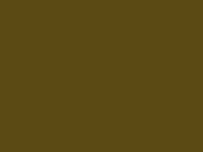
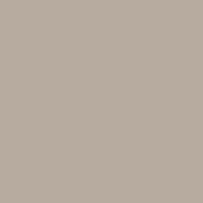

Unfortunate Colors
My goal in this page is to try out three Bootstrap features: Affix, Modals, and Tooltips. There will be an affixed horizontal nav bar with three tabs, and in each of these tabs will be an image with tooltip, some text, and a button that opens a popup window.
Edit: It turns out all the Affix stuff related more to Bootstrap 3, and the sticky-top class works perfectly in Bootstrap 4 to get the nav bar to stick. So much easier.
Opaque Couche
Science may have given us the world's ugliest color. Researchers at Bfk Bluemoon in Australia found that Pantone 448C, Opaque Couche, turns people off more than any other color. The research has been verified by other groups.
Ugly Color Quiz:
What everyday product is packaged in Opaque Couche in several countries?
Greige
Exactly what it sounds like. As advice website for millennials The Spruce calls it, "The Best Neutral Color Ever?"
I'm guessing that if you're getting excited about painting your home greige, you have joined the ranks of functional adults.
Celebrity Color Quiz:
Which designer lists greige as one of their favorite colors?
AI Generated Colors
This is my favorite color resource for humor value. This person trained a neural network on color names and RGB values and then had it create its own.
I'm not sure I'm ready for greige, but I'd definitely paint my kitchen Burf Pink or Stanky Bean.
Neural Network Color Quiz:
Should I paint my kitchen Stanky Bean?